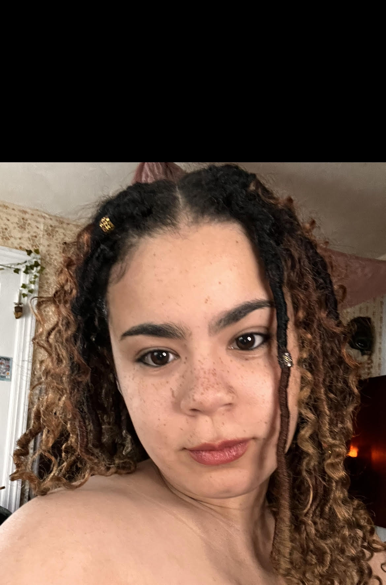

Sade Ajishegiri
Graduate Student Journalist
 Email: ssajishegiri@gmail.com
Email: ssajishegiri@gmail.com
~LinkedIn~
~Twitter~
~GitHub~
Experience:
- Reporter -
Indiana Daily Student
2022-2024
Wrote columns for the Black Voices Afuera desk, which gives voice to minority issues at one of the country’s most acclaimed student news organizations.
Won an Indiana Collegiate Press Association award for a column on the backlash against Halle Bailey’s portrayal of Ariel in the Disney live-action remake of The Little Mermaid.
- Reporter -
Arnolt Center for Investigative Journalism
2022 - 2024
Gathered, cleaned and analyzed data for a story in partnership with the Indiana Environmental Reporter. Investigated state legislators making environmental laws that conflict with their business interests.
- Community Radio News Correspondant -
WFHB
2021 - 2024
Covered protests against the war in Ukraine, wrote, edited and produced the story for radio
Covered a celebration of Martin Luther King, Jr. at the local public library
Education:
- Philip Merrill College of Journalism at University of Maryland – College Park, M.S., Multi-Platform Journalism, Philip Merrill College of Journalism, University of Maryland, College Park, Expected graduation May 2026
- BA, Journalism, The Media School at Indiana University, Bloomington, Graduated May 2024 Member of IU chapter of the NABJ
Skills:
- Copy-editing
- Data Analysis with Excel
- Writing and editing for radio
- Producing radio segments
Contact me!